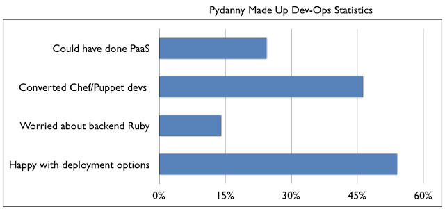
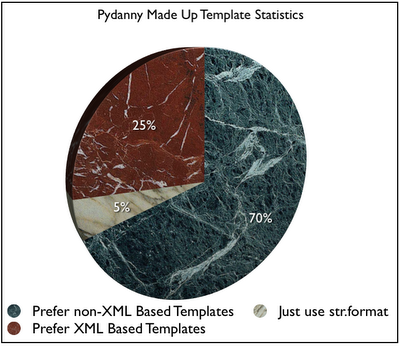

Years ago my good friend Miguel Araujo and I presented on Advanced Django Form Usage. Slide 18 of that talk mentioned some made up statistics. Here they are for reference:
- 91% of Django projects use ModelForms.
- 80% ModelForms require trivial logic.
- 20% ModelForms require complex logic.
In Chapter 10 of Two Scoops of Django I expanded on those made up statistics:
- 95% of Django projects should use ModelForms.
- 91% of all Django projects use ModelForms.
- 80% of ModelForms require trivial logic.
- 20% of ModelForms require complicated logic.
Important Disclaimer: These numbers were cooked out of thin air by yours truly. I determined them with zero research, they carry absolutely no scientific weight, and shouldn't be used in any serious argument. They are wholly my opinion, which is good or bad depending on your point of view and your own opinion of my opinions.
With that out of the way, here's a bar graph created from the fictional data I presented with Miguel back in 2011:

You'll notice that my bar titles could be stronger. I actually did that on purpose in case anyone tries to use that chart in real life. In any case, if you thought that was interesting, then read on. I have many more made-up statistics. For example, here are more numbers I've cooked up:
Pydanny Made Up DevOps Statistics
Thanks to the cloud and a blizzard of hip, new tools, DevOps is the new hotness. I know because every other Python meetup features someone speaking on it - just like every other Ruby, Perl, and PHP meetup. Anyway... numbers:
- 24.3% of Python developers doing DevOps think they could have launched a PaaS (aka Heroku clone) before it got crowded.
- 46.3% of Python developers doing DevOps spend all their time writing Chef/Puppet scripts and yet still claim to be Python developers.
- 14% of Python developers are worried about so much of the backend being done in Ruby, but don't quite trust Salt or Ansible enough to use them.
- 54% of Python developers are just happy that there are many options now and don't care about the internal machinery that much.
This time, because I'm worried about the data being taken seriously, I've titled the bar chart in such a way that no one will reference it in anything important:
Pydanny Made Up Python Enviroment Statistics
Following the obvious logic flow (to me anyway) of DevOps to something else, let's go into Python environments, also known as the VirtualEnv vs Buildout debate, which adds up to an even 100% (making it good pie chart material):
- 77% of Python Developers prefer VirtualEnv.
- 13% of Python Developers prefer Buildout. Many of them don't say this out loud.
- 7% of Python developers rolled their own solution and wish they could switch over.
- 3% of Python developers rolled their own solution and are fiendishly delighted with how they have guaranteed their own job security forever. I know who some of you are and I can say with some confidence that when the Zombie apocalypse happens, no one is going to invite you into their fortified compounds. We hate you that much.
Pydanny Made Up Template Debate Statistics
The made up statistics in this post frequently touch on contentious topics. So let me add another controversial topic, this time the never ending template debate in Python:
- 70% of python developers prefer non-XML templates.
- 25% of python developers prefer XML templates.
- 5% of python developers wonder why we don't just use the str.format() method and be done with it.
The display for this data is a lovely pie chart as seen below. In order to make it appear more useful, I made it a 3-D pie chart:
Pydanny Made Up Python Web Optimization Statistics
I sometimes get asked how to best optimize a Django site. My answer is 'optimize your queries and use caching'. On the other hand, there are those who disagree with me and start switching out Django internals before doing anything silly like looking at I/O. My bet is this same thing happens with other frameworks such as Flask and Pyramid.
- 20% developers argue switching template languages.
- 80% developers argue using caching and load balancing.
- 100% Django/Pyramid/Flask/etc core developers argue using caching and load balancing.
Of all the made up statistics in this blog post, I suspect this is the one closest to the truth of things.
Pydanny Made Up Debate Statistics
Alright, let's conclude this article with some statistics I cooked up in regards to various Python related topics.
- 95% of developers trying to create reusable Python packages have no freaking idea as to whether or not we should be using setuptools, distribute, or distribute2 and wish there was a clear explanation on the front page of PyPI as to what we should be using and how. Something like a link to the Python Packaging User Guide might be nice!
- 99% of us get frustrated with trying to reconcile the pronunciations of PyPI with PyPy.
- 97.2% of our family and friends have no idea what Two Scoops of Django is about.
- 62% of Python developers are wondering if Tulip will make their projects more web scale.
- 49% of Twisted developers wish that Python had accepted their standard instead of PEP-8.
- 42% of Python developers think Flask/Pyramid have awesome names that don't get mispronounced the same way Django does.
- 28% of Python developers wish they could find a way to get some SciPy into their projects.
- 23.6% of us get web.py and web2py confused with each other.
No chart? Getting this one to look meaningful was turning into a herculean effort. I invite others to render this data into something that look attractive and doesn't lose meaning. Come up with something impressive and I'll put it into a follow-up blog post.
Note: This is a reprint and update of an earlier article.
Update: Added link to the Python Packaging User Guide.


Comments